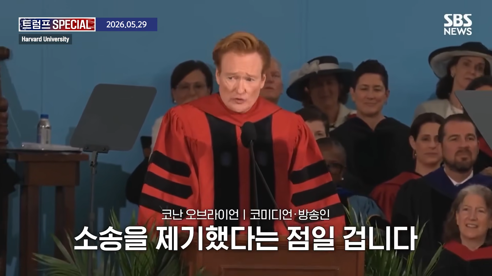
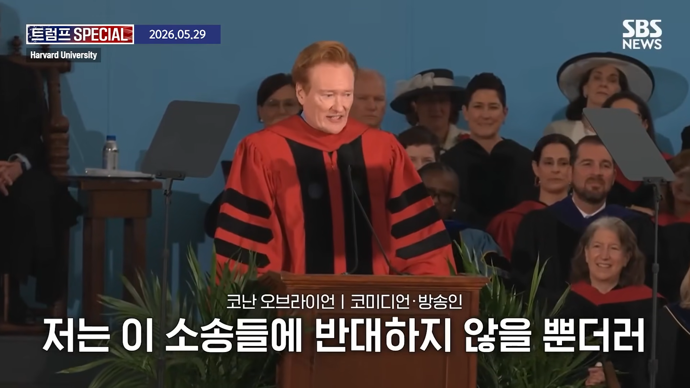
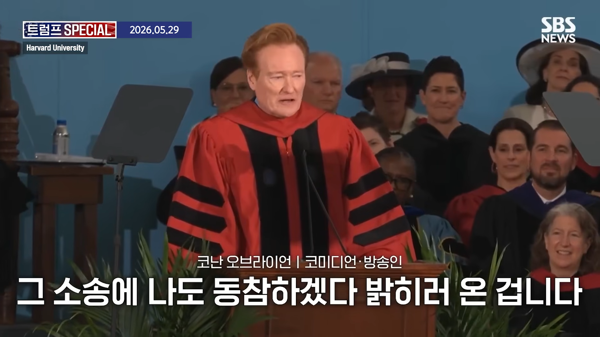
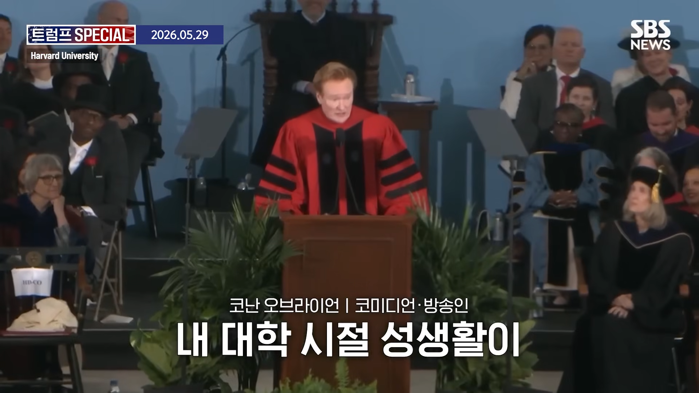
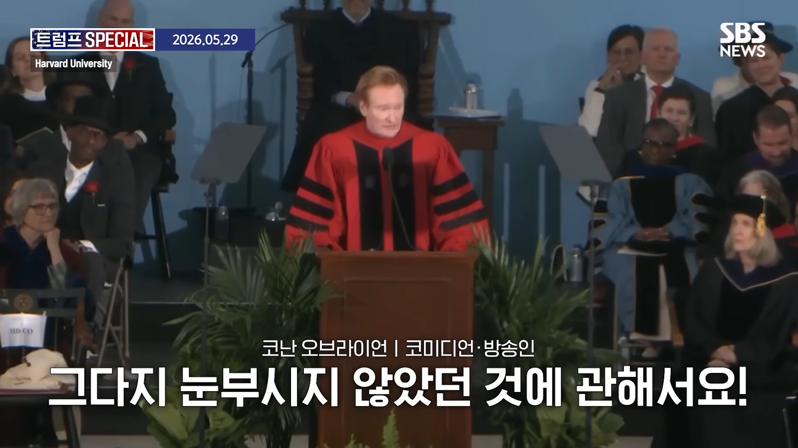
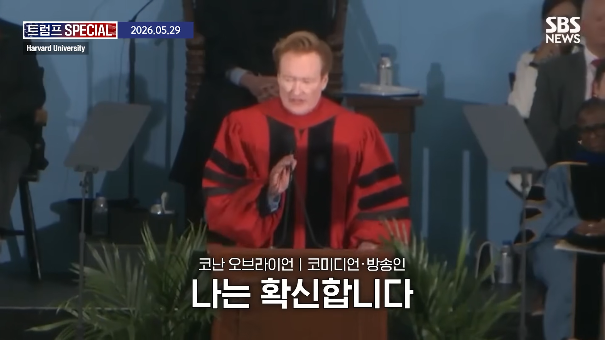
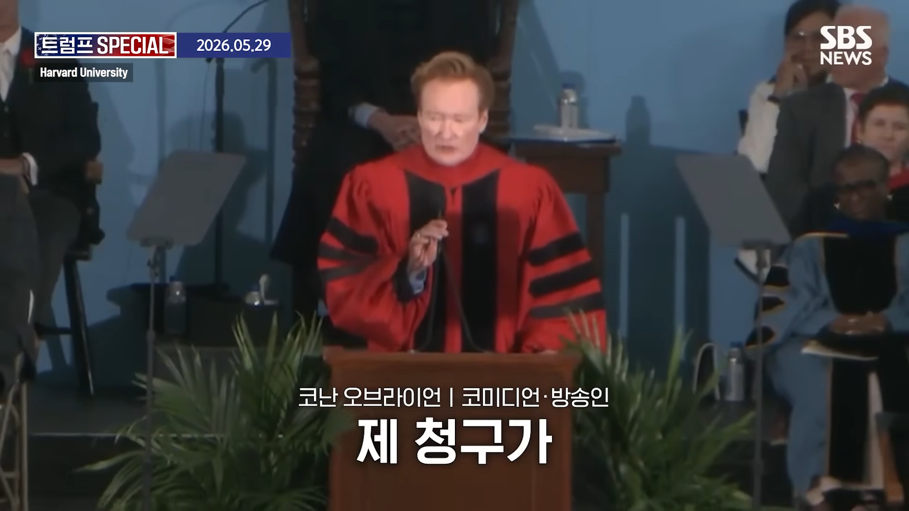
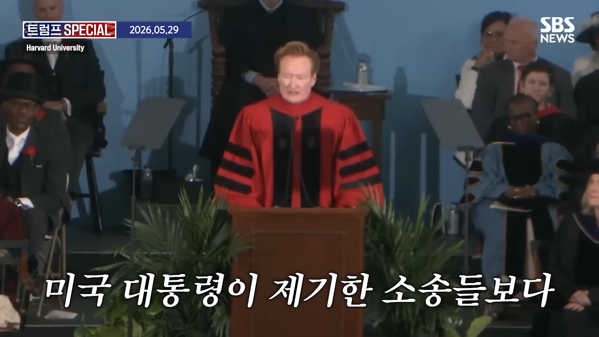
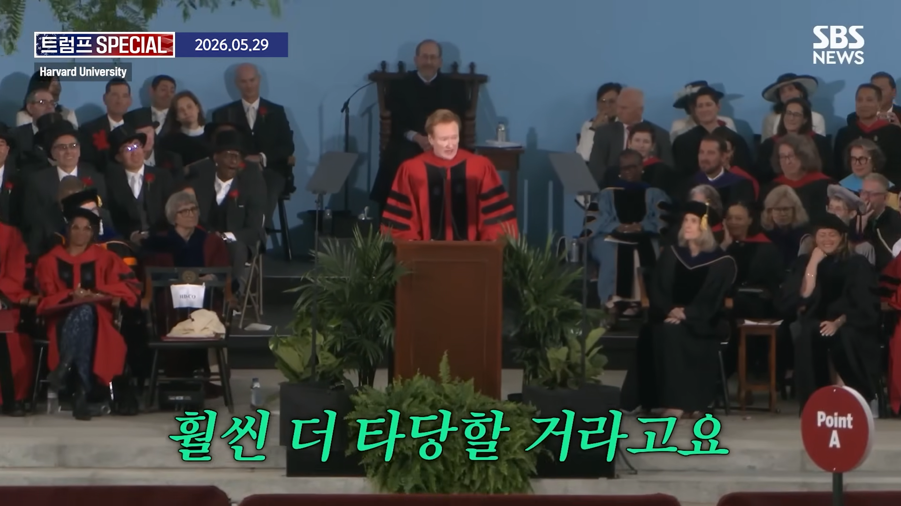

지구를 고소해라
ㅋㅋㅋㅋ
아무도 안말리니깐 해보슈
차라리 섹스 안 해준 여자들 고소해라
안 만져도 성추행인데 성평등국가면 이기겠지
지난 성 생활에 측정되지 않았던 어려움을 고려해, 귀하에게 장애등급을 부여하겠습니다.
한국 말고 지구주딱한테 걸어야지.
허허허허 대한민국은 의외로 사회주의에 가깝습니다.
너정도면 지구 구속수사 해야할듯
ㅇㅇ 전국민색수가처분신청과 본안소송 동시에 들어가
와 찾아보니 하버드 졸업이네 ㅋㅋㅋㅋㅋㅋ
"중퇴하면 빌게이츠 되고 졸업하면 나처럼 된다"
저런 개그는 내부자만 칠 수 있는거임.
흑인들이 흑인에게 니거라고 하는 것처럼.
So you graduated harvard~?
하버드 출신들이 평생 듣는 말
증명하는 자리
졸업이 어려운가봐?
물론 미국대학이 다 입학보다는 졸업이 어렵지만 저 말은, 사람이 살다보면 실수할 수도 덜떨어진 행동을 할 수고 있는데 네가 그러고도 하버드 나온 사람이냐?라는 말을 평생 듣는다는 농담이었음
그니까 좆도 아닌걸로 대학을 괴롭히고 있다.. 라고 해석하면 되는거임?
???: 대학때 아싸생활한걸로 고소한다는게 트럼프가 하버스 고소한다는거보단 합리적이겠다!
우주 이 새끼...기다려라
커뮤에서나 할법한 드립을 실제 현장에서 살려버리네 ㅋㅋㅋㅋ 진짜 미친 재능이다
말잘하네 ㅋㅋㅋㅋ
진짜 잘 돌리네 ㅋㅋㅋㅋ
어 그럼 나도 대한민국 상대로 소제기해도 돼?